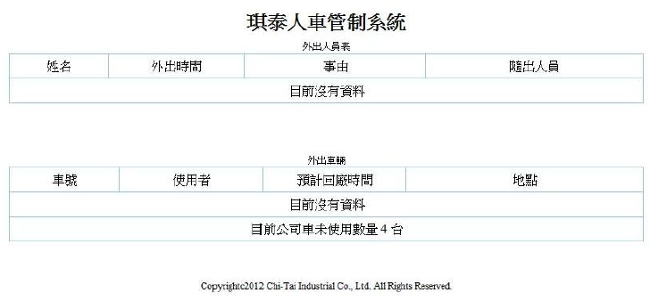
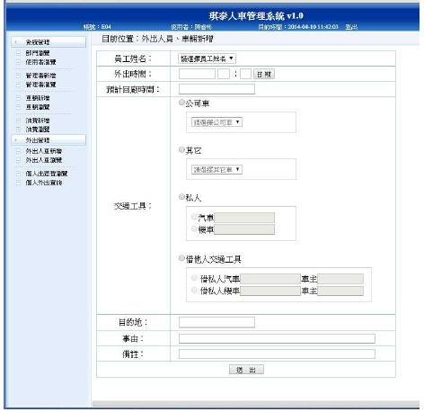
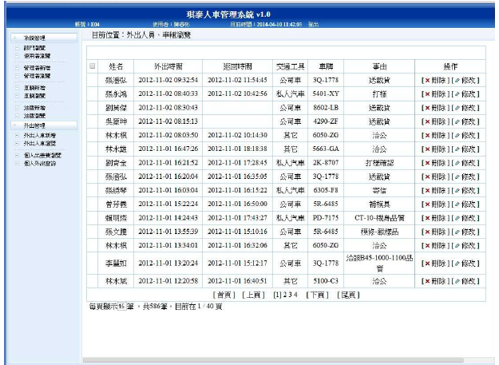
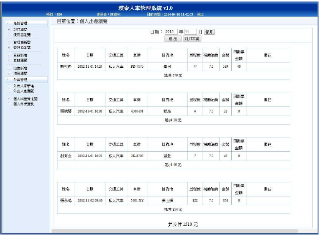

這個專案是我任職網管期間，使用原生PHP開發的小系統，包含前後端，也是我的第一個PHP專案，值得紀念。
那個時候公司有改善提案的制度，資訊隸屬於管理部底下，每個月每個部門都要提2件改善提案， 其實如果站在資訊的角度要提改善提案，是提不完的，所提的案件都可以為公司解決問題。
某一天，辦公室傳來，xx主管在公司嗎?xx保管在品保室嗎?小白公務車有人開嗎?小藍貨車還在公司嗎? 腦袋突然傳來一個畫面，那就來寫一個可以查詢人員與車輛的系統好了。
每天花一點時間來coding，心裡OS，終於可以寫程式了，哈哈...。
系統主要是為了即時管控人員以及車輛，透過開啟網頁的方式，瀏覽已外出的人員及公用車輛，其中包含油費補助，會計可以透過個人出差費查詢補助出差人員費用。
前台瀏覽畫面

後台外出人員、車輛新增畫面

後台外出人員、車輛瀏覽畫面

出差費瀏覽畫面
